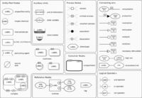
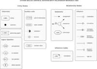
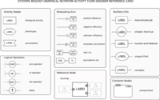

User Page
Contents |
SBGN study guide
Visit the Documents section for:
- various examples (to get a better idea of what an actual map looks like)
- some tutorials (very accessible, but not always up-to-date)
- publications about SBGN (a good start for a brief historical overview)
- detailed technical specifications (the ultimate reference documents, most up-to-date, but a steep learning curve for beginners)
- some Frequently Asked Questions
Please also check the SBGN PD User Manual when you are ready to draw your own maps.
Quick overview
The Systems Biology Graphical Notation comprises three complementary languages suited to represent different types of pathways.
Process Descriptions (PD) is a language that permits the description of the processes (e.g. biochemical reactions) taking place in a biological system. PD maps are essentially bipartite graphs made up of nodes representing pools of molecular species and nodes representing processes. PD is great to represent precisely metabolic networks for which we know all the reactants and reactions, and visualize chemical kinetic models.
Entity Relationships (ER) is a language that permits the description of all the relations involving the entities of a biological system. There is mainly one type of nodes, representing the objects considered, linked by relationships. The relationships are independent, avoiding the problem of combinatorial explosion triggered by multistate entities. ER is perfect to visualize rule-based models.
Activity Flows (AF) is a language that permits the description of the flow of activity in a biological system. All nodes represent activities, linked by modulation arcs. AF is best used to represent signalling pathways or gene regulatory networks where mechanistic knowledge is missing or omitted, and to visualize logical models.
Language reference cards
Users already familiar with the semantics and syntax of SBGN can refer to these cards as a reminder of the overall list of available glyphs for each language:
 |  |  |
{kind=link}
{kind=link}
{kind=link}
SBGN Bricks dictionary
A dictionary of reusable patterns (e.g. phosphorylation, translation, catalysis, transport, etc.) commonly found in different types of biological networks is available on the SBGN Bricks webpage.
The patterns are available in all 3 SBGN languages (where applicable). They can be downloaded as SBGN-ML files, to be reused in compatible software applications.
Getting started
Check the following resources if you understand the general idea behind SBGN but are wondering exactly how you can start using it in your own maps.
User Manual
Beginner-friendly directions are now available in the SBGN PD User Manual. User guides for other languages will follow as soon as possible.
Software tools to handle maps
If you are looking for software tools designed specifically to handle SBGN maps, check our Software section.
A growing number of tools supports SBGN-ML, the recommended file format to store SBGN maps. Maps saved as SBGN-ML files can be reused in any compatible tool. Each tool offers a unique set of useful features (e.g. semi-automated layouts, syntactic validation, etc.). SBGN-ML allows users to make the most of all available compatible applications.
Reusable network patterns can be downloaded as SBGN-ML files from the SBGN Bricks dictionary.
If you are reluctant to install a new piece of software on your machine, SBGN maps can also be drawn using more generic applications, such as Microsoft PowerPoint or Inkscape. Feel free to reuse one of our templates to assist you in this task.
For developers of software tools
Tool developers eager to support SBGN should check the LibSBGN project. This open source library allows to integrate a number of useful functionalities into third party applications: import/export of SBGNML files, check if a map is valid or not, etc.
How to cite?
When referring to SBGN in any publication, please follow these instructions. Feel free to reuse one of our logos in any poster, presentation, website, etc.
Going further, getting involved
SBGN is an open community project. Be it to ask a question or suggest a modification, anyone's input is welcome. Check the Developer Page for more information.